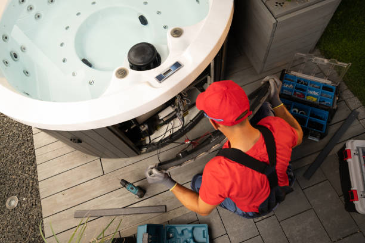
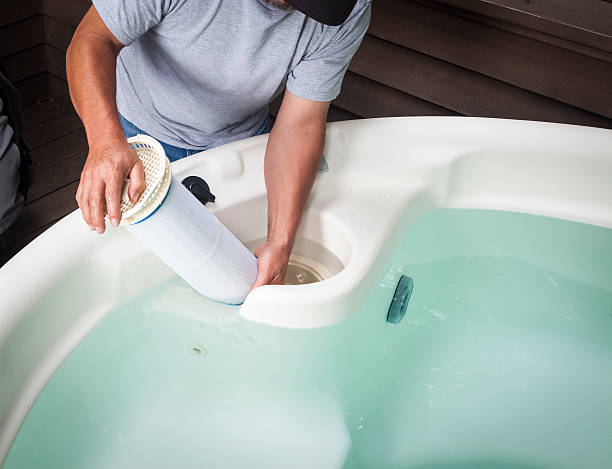

Staples Minnesota
info@fancyjacuzzirepair.pro
Staples Minnesota
info@fancyjacuzzirepair.pro

Choose the best Jacuzzi repair company in Staples Minnesota . We specialize in diagnosing and fixing spa problems promptly. Affordable pricing, expert care, and a reputation you can trust.
Click Here To Call Us (877) 848-1711Are you facing issues with your Jacuzzi? Look no further! Our top-rated Jacuzzi repair services in Staples Minnesota ensure your spa is back to perfect working condition in no time. Whether it’s a minor leak, malfunctioning jets, or a complete breakdown, we’ve got you covered.
Our team of certified technicians specializes in diagnosing and repairing all types of Jacuzzi problems. Using advanced tools and techniques, we identify the root cause and provide long-lasting solutions. From pump and heater repairs to control system troubleshooting, our expertise spans across all Jacuzzi makes and models.
Why choose us? We pride ourselves on delivering exceptional customer service and fast response times. We understand how important your spa is for relaxation and wellness, and we strive to minimize downtime with efficient repairs. Plus, we use only high-quality replacement parts to extend the lifespan of your Jacuzzi.
Serving Staples Minnesota and surrounding areas, our Jacuzzi repair services are trusted by homeowners and businesses alike. Regular maintenance and timely repairs can save you from costly replacements—let us handle the hard work for you.
Contact us today for reliable, affordable, and professional Jacuzzi repair in Staples Minnesota . Relaxation is just a phone call away!
Residential & commercial Jacuzzi repair
Quality services at affordable prices
Immediate 24/ 7 emergency services


Jacuzzis are a great way to relax and unwind, but like any mechanical system, they can experience issues over time. If you’re encountering problems with your hot tub or jacuzzi, it’s crucial to address them quickly to ensure optimal performance and safety. Here are some of the most common jacuzzi problems we fix in Staples Minnesota :
Water Not Heating
One of the most common issues is when the water fails to heat. This can be caused by a malfunctioning heater element or a faulty thermostat. Our expert technicians in Staples Minnesota can quickly diagnose the issue and restore your jacuzzi’s heating functionality.
Leaking Water
If your jacuzzi is leaking, it could be due to damaged pipes or seals. Water leakage can lead to significant damage, so it’s important to have it repaired immediately. Our team specializes in leak detection and sealing, ensuring your jacuzzi is water-tight.
Dirty or Cloudy Water
Cloudy water may indicate issues with your filter or water chemistry. We offer comprehensive cleaning services and water treatment, helping restore crystal-clear water, so you can enjoy a perfect soak.
Jets Not Working
Weak or non-functional jets can be caused by blockages or pump issues. Our professional repair services in Staples Minnesota will ensure your jets are working like new, providing you with the relaxing experience you expect.
If you’re facing any of these jacuzzi issues, don’t hesitate to contact our experts at Staples Minnesota . We offer fast, reliable, and professional jacuzzi repairs to get you back to relaxation quickly!
Residential & commercial Jacuzzi repair
Quality services at affordable prices
Immediate 24/ 7 emergency services
The plumbing system of your jacuzzi is essential for efficient water circulation and sanitation. If you notice leaks, inconsistent pressure, or water quality issues, it’s crucial to address plumbing problems promptly. Our jacuzzi plumbing repair and maintenance services in Staples Minnesota focus on diagnosing and solving plumbing issues effectively. From pipe repairs to valve replacements, our experienced technicians ensure your plumbing system is functioning optimally. Regular maintenance is key to preventing future plumbing problems, and our team is committed to keeping your jacuzzi in excellent condition.

Ensuring that your jacuzzi water is safe and enjoyable requires regular monitoring and balancing of chemicals. Imbalanced water can lead to skin irritations, eye infections, or equipment corrosion. Our water quality and chemical balancing services provide thorough testing and adjustments of your spa’s water chemistry. We analyze pH levels, alkalinity, and sanitizer levels to ensure your hot tub water remains clear, safe, and inviting. By relying on our expertise, you can enjoy peace of mind knowing your water is perfectly balanced for relaxation.

Proper insulation is key to maintaining water temperature and reducing energy costs. If your jacuzzi’s insulation is damaged or deteriorated, you may notice higher energy bills and longer heating times. Our jacuzzi insulation repair and replacement services are designed to enhance the efficiency of your hot tub. We assess your insulation needs and provide solutions that keep your jacuzzi warm and inviting, regardless of the season. By choosing expert insulation services, you can enjoy your spa while saving energy and costs.

To prolong the life of your Jacuzzi, regular maintenance is essential. At Jacuzzi repair, we offer a range of maintenance and seasonal services designed to keep your spa in peak condition. Our experienced technicians conduct thorough inspections and preventative measures, addressing potential issues before they become costly problems. Whether it’s spring cleaning before the hot season or winterization for cold weather, we have you covered. Our commitment to exceptional service and customer education ensures that you have the best experience with your hot tub. With our detail-oriented approach, your Jacuzzi will remain a source of relaxation for years to come.

Proper winterization is vital for protecting your hot tub during the colder months. At Jacuzzi repair, we provide expert Jacuzzi winterization services to ensure that your spa is safeguarded against frost damage and freezing temperatures. Our specialized techniques include draining water, adding antifreeze, and insulating vulnerable areas to prevent costly repairs in the spring. We offer comprehensive winterization packages tailored to your specific needs, ensuring your hot tub is ready for the offseason. Choose us for our expertise and commitment to quality service, allowing you to enjoy peace of mind during winter.
Regular maintenance and cleaning are essential to the longevity and enjoyment of your jacuzzi. Our team offers comprehensive Jacuzzi maintenance and cleaning services in Staples Minnesota covering everything from water testing and chemical balancing to thorough cleaning and inspections. By establishing a regular maintenance schedule, you can prevent larger issues and ensure optimal performance. Our expert team is committed to providing exceptional service, allowing you to enjoy a clean, safe, and inviting spa at all times.

Proper chemical treatment and water balancing are critical to ensuring a safe and enjoyable spa experience. Poorly balanced water can lead to skin irritation and equipment corrosion. Our jacuzzi chemical treatment and water balancing services are designed to provide comprehensive testing and adjustments, creating the ideal chemical environment for your hot tub. Our trained professionals use quality products and proven techniques to optimize your water chemistry, ensuring it remains sparkling clean and safe for you and your family.

Ready to get your hot tub up and running for the first time or after a long break? Our Jacuzzi start-up services help you prepare your spa for a refreshing experience. At Jacuzzi repair, we guide you through the process—setting up the system, balancing chemicals, and ensuring everything is functioning properly before you enjoy your first soak. Our expert team in Staples Minnesota ensures a seamless transition from installation to enjoyment.

A quality spa cover is essential for maintaining water temperature and cleanliness, as well as protecting your hot tub from the elements. When your cover becomes damaged, it may need repair or replacement. At Jacuzzi repair, we specialize in spa cover repair and replacement services, utilizing durable materials that ensure long-lasting protection for your Jacuzzi. Trust us to enhance your hot tub’s efficiency and appearance here .
Years Experience
Expert Technicians
Satisfied Clients
Compleate Projects
At Fancy Jacuzzi Repair, we understand the importance of a fully functioning jacuzzi in your home or business. Whether you need maintenance, a repair, or installation, we are your trusted experts in Staples Minnesota . Our highly trained technicians have years of experience, ensuring that your jacuzzi is in safe hands.
We pride ourselves on delivering prompt, reliable service with a customer-first approach. We know that a broken jacuzzi can disrupt your relaxation, which is why we offer fast response times and flexible scheduling to meet your needs. Our team arrives fully equipped with the necessary tools and parts to get your jacuzzi up and running in no time.
What sets us apart is our commitment to quality. We use only high-grade, durable parts for repairs and ensure that every job is completed to the highest standards. From fixing pumps and heaters to addressing leaks and electrical issues, we have the expertise to handle any challenge your jacuzzi presents.
At Fancy Jacuzzi Repair, we are dedicated to providing affordable, long-lasting solutions to our customers in Staples Minnesota . We offer competitive pricing, transparent quotes, and a satisfaction guarantee, ensuring you get the best value for your investment.
Trust Fancy Jacuzzi Repair for all your jacuzzi needs in Staples Minnesota . Let us restore your jacuzzi’s performance and comfort, so you can enjoy the relaxation you deserve.
Your hot tub's pump is the heart of your spa, circulating water and keeping it clean. If your jacuzzi is experiencing low water pressure, strange noises, or failure to start, it may be time for a professional Jacuzzi pump repair. Our experienced technicians in Staples Minnesota specialize in diagnosing and fixing pump issues, ensuring your spa operates at peak performance. We use high-quality replacement parts and follow industry-standard repair procedures. Choosing us means you’ll receive prompt service, a satisfaction guarantee, and expert advice on maintaining your pump to prevent future issues.
A hot tub isn’t truly enjoyable without a functioning heater. If you're experiencing inconsistencies in temperature or your heater isn't engaging, you need a quick and efficient solution. At Jacuzzi repair, our skilled technicians are adept at diagnosing and repairing hot tub heater issues, whether it’s a simple wiring problem or a complex internal malfunction. We equip our team with the latest tools and technologies to tackle any issue effectively. When you choose us, you are ensuring that your hot tub returns to its fully heated state, ready for relaxation at a moment's notice.
Water loss in your Jacuzzi can lead to both structural and financial strain. If you suspect a leak, you need specialists who can not only identify but also effectively repair the leak to avoid further damage. With years of experience in Jacuzzi leak detection and repair, Jacuzzi repair offers a meticulous service designed to locate leaks swiftly and fix them correctly. Our team employs advanced methods and technologies to detect even the smallest issues, ensuring that your hot tub remains functional and efficient through every season .
Is your jacuzzi motor making unusual sounds, struggling to perform, or failing to start? The motor is a vital component that powers multiple functionalities of your jacuzzi. At Jacuzzi repair, our team specializes in jacuzzi motor repair, ensuring that your spa functions smoothly and efficiently. We offer comprehensive assessments to diagnose any motor-related issues quickly, using only the highest quality replacement parts to ensure lasting repairs. Our technicians are trained to service a wide range of jacuzzi models, providing professional repairs that enhance performance and extend the life of your hot tub. Choose Jacuzzi repair for dedicated jacuzzi motor repair services that prioritize your comfort and satisfaction.
For a truly rejuvenating experience, your Jacuzzi jets must operate flawlessly. At Jacuzzi repair, we specialize in repairing and replacing Jacuzzi jets, ensuring optimal performance and therapeutic benefits. Whether you’re facing low water flow, malfunctioning jets, or physical damage, our team is prepared to provide swift and effective solutions. We carry a wide range of replacement jets, giving you options that fit your specific model and design. Our approach focuses on both functionality and customer satisfaction, making us the preferred choice for jet repair and replacement . With our expertise, you can look forward to an enhanced hydrotherapy experience.
Your jacuzzi control panel is the brain of your spa, allowing you to manage temperature, jets, and lighting. If the control panel is unresponsive, displaying error messages, or is not functioning as it should, it can lead to an unsatisfactory experience. Our control panel repair service in Staples Minnesota specializes in diagnosing and fixing issues with both digital and analog controls. We utilize state-of-the-art diagnostic equipment and have access to genuine replacement parts to ensure your control panel works perfectly again. Rely on us for fast service and expert solutions to keep your jacuzzi operating smoothly.
Proper water pressure is essential for the optimal function of your jacuzzi. Water pressure issues can lead to ineffective heating, poor jet performance, and dissatisfaction with your spa experience. Our team specializes in diagnosing and resolving water pressure problems . We address issues such as clogged filters, leaky pipes, and malfunctioning pumps to restore the ideal pressure efficiently. With our comprehensive repair solutions, you can enjoy uninterrupted relaxation in your hot tub. We pride ourselves on our ability to quickly identify the root of the problem and implement effective solutions.
Electrical issues in a Jacuzzi can pose serious safety concerns and should be addressed immediately. At Jacuzzi repair, we offer expert troubleshooting and repair of all electrical components in your hot tub. Our licensed technicians evaluate wiring, connections, and circuits to ensure everything is working as it should. We prioritize safety in every repair we undertake and work meticulously to provide a resolution that guarantees peace of mind and spa enjoyment in Staples Minnesota .
Efficient water circulation is critical to maintaining clean and safe hot tub water. If you notice cloudy water or ineffective filtration, it’s likely due to circulation problems. Our technicians specialize in diagnosing water circulation issues related to pumps, filters, and skimmers in Staples Minnesota . We conduct a thorough assessment to identify the cause of the problem and implement effective solutions, ensuring your hot tub water is pristine and ready for enjoyment. Our commitment to quality service means you can trust us to enhance your spa’s water circulation systems.
The filter plays a critical role in maintaining water cleanliness and quality in your Jacuzzi. Over time, filters can become clogged and inefficient, requiring replacement. At Jacuzzi repair, we provide exceptional Jacuzzi spa filter replacement services, ensuring that your hot tub water remains crystal clear and safe for you and your family. Our knowledgeable technicians guide you through the selection process, helping you choose the right filter for your specific model in Staples Minnesota . Trust us to help keep your hot tub pristine and ready to enjoy.
Not all jacuzzis are created equal, and some may require specialized repair expertise due to unique models or features. Our specialized jacuzzi repair services in Staples Minnesota cater to various jacuzzi systems, from high-end luxury models to standard residential units. Our technicians have the training and experience needed to handle unique components and specialized systems. Whether it’s a specialized jet system, advanced heating technology, or unique construction materials, our team is equipped to provide the repair and maintenance services your spa requires.
An ozone system enhances water purification in your hot tub by reducing the need for chemicals and maintaining clean water. If you notice unusual odors or reduced water clarity, you may have an ozone system malfunction. Our jacuzzi ozone system repair service ensures that your ozone generator is functioning correctly, promoting a healthier and more enjoyable spa experience. We utilize advanced diagnostic tools to identify issues and implement effective repairs or replacements, allowing you to relax and enjoy your spa without the hassle of murky water.
Over time, wear and tear can affect the surface of your hot tub, leading to scratches, discoloration, and mold build-up. Our hot tub resurfacing and reconditioning services restore the aesthetics and functionality of your spa. At Jacuzzi repair, we provide quality workmanship and superior products to revitalize your hot tub’s surface, ensuring that it looks as good as new. Our services are available to homeowners letting you reclaim the beauty and enjoyment of your space in no time.
Regular recalibration and diagnostics ensure your jacuzzi is operating at optimal levels. Factors such as temperature inaccuracies, jet performance, and chemical readings can indicate the need for professional recalibration. Our jacuzzi recalibration and system diagnostics in Staples Minnesota provide a comprehensive analysis of your spa’s systems, ensuring everything works in harmony. We identify any discrepancies and make necessary adjustments to guarantee the best performance from your jacuzzi. By choosing us, you’re ensuring your equipment is finely tuned for optimal relaxation and enjoyment.
An effective drainage system is vital for maintaining the cleanliness and hygiene of your hot tub. Blockages or leaks can lead to significant issues if not addressed promptly. Our jacuzzi drainage system repair service focuses on restoring proper drainage to prevent water pooling and damage. We assess the entire system, looking for blockages, damages, or improper installation. Our experienced technicians have the expertise to implement comprehensive repairs that restore the function of your drainage system and enhance the longevity of your jacuzzi while ensuring user safety.
A fully functioning blower is crucial for enjoying air massage and bubble therapy in your hot tub. If your blower isn’t operating correctly, it can significantly detract from the overall experience. At Jacuzzi repair, we specialize in Jacuzzi blower repair and replacement services. Our skilled technicians quickly diagnose blower issues and determine the best course of action, ensuring your spa maintains that invigorating sensory experience that only a properly functioning blower can provide in Staples Minnesota .
Proper lighting is an essential aspect of creating the perfect ambiance in your hot tub. If you encounter lighting issues, the comfort of your spa can be compromised. At Jacuzzi repair, we offer Jacuzzi lighting repair services that include diagnosing and fixing electrical and bulb-related problems. We aim for a thorough approach to restoring your spa’s atmosphere, ensuring functionality so that you can enjoy your Jacuzzi to its fullest potential, day or night, in the beautiful Staples Minnesota .
The hot tub shell is the structural core of your spa that supports the entire functionality. Damage to the shell can lead to leaks and degrade the overall appearance of your hot tub. At Jacuzzi repair, we provide professional hot tub shell repair services, addressing cracks, discoloration, and damage efficiently. Our team utilizes high-quality materials to ensure a long-lasting and durable repair, giving residents a spa that not only functions properly but looks amazing as well.
After a jacuzzi repair in Staples Minnesota maintaining its performance and longevity is crucial. Regular maintenance not only ensures your jacuzzi continues to work optimally but also prolongs its lifespan. Here’s a step-by-step guide to help you keep your jacuzzi in top condition after a repair.
1. Regular Water Testing and Balancing:
To keep your jacuzzi's water safe and clean, regularly test the water’s pH, alkalinity, and sanitizer levels. The proper balance prevents corrosion and scaling on both your jacuzzi’s components and the repair work done.
2. Clean Filters Often:
After a repair, it’s essential to keep the jacuzzi filters clean. Clogged filters can affect water circulation, strain the pump, and hinder the jacuzzi’s efficiency. Clean or replace filters as needed, usually every 3 to 6 months, depending on usage.
3. Maintain the Cover:
The jacuzzi cover plays a vital role in protecting your jacuzzi from debris and weather elements. Ensure the cover is in good condition after repairs and use a cover cleaner to remove any buildup. Keeping the cover intact ensures the jacuzzi's efficiency and reduces repair needs.
4. Check for Leaks:
Inspect your jacuzzi for any signs of leaks after a repair. Addressing leaks promptly will help prevent more extensive and expensive issues in the future.
By following these simple yet effective maintenance tips, you can ensure your jacuzzi remains in excellent condition long after the repair, offering you relaxation and comfort in Staples Minnesota .
Staples is a city in Todd and Wadena counties in the U.S. state of Minnesota. The population was 2,989 at the 2020 census.
You can call us or book online to schedule your repair appointment in Staples Minnesota .
Regular maintenance and prompt attention to small issues can prevent major repairs. We offer maintenance services .
Absolutely! Our repair services are fully insured for your protection.
Yes, we use advanced tools to detect and repair Jacuzzi leaks efficiently .
Common issues include pump malfunctions, heater failures, leaks, and jet blockages, all of which we expertly handle in Staples Minnesota .
If your Jacuzzi water isn't heating or takes too long to heat, it may indicate a heater issue. Our experts can inspect and repair it promptly.
Jacuzzi jets often stop working due to clogged filters, airlocks, or pump issues. Our team in Staples Minnesota can quickly diagnose and fix these problems.
Yes, we specialize in addressing water pressure issues to restore your Jacuzzi's functionality in Staples Minnesota .
Yes, all our technicians are certified and highly experienced in providing top-quality Jacuzzi repair services .
We accept various payment methods, including cash, credit cards, and online payments, for our services in Staples Minnesota .
Fancy Jacuzzi Repair serves all neighborhoods and surrounding areas in Staples Minnesota .
Regular maintenance every 3-6 months is recommended to keep your Jacuzzi in optimal condition. We offer maintenance plans .
Yes, we are experienced in repairing or replacing faulty control panels for Jacuzzis in Staples Minnesota .
Yes, we provide repair services for both residential and commercial Jacuzzi systems .
Yes, we offer repair and replacement services for damaged Jacuzzi covers .
Yes, we carry high-quality replacement parts to ensure durable and reliable repairs in Staples Minnesota .
Most repairs are completed within 1-2 hours, but the timeline depends on the complexity of the issue.
Yes, we offer free estimates for all Jacuzzi repairs to help you understand the scope and cost of the work.
Whenever possible, we offer same-day repair services for urgent needs.
Contact Fancy Jacuzzi Repair immediately! Our team in Staples Minnesota will troubleshoot and resolve the issue quickly.
Repair costs vary depending on the issue, but we provide competitive pricing and transparent quotes.
Fancy Jacuzzi Repair offers a wide range of Jacuzzi repair services in Staples Minnesota including fixing leaks, pump and motor repairs, jet replacements, heater issues, and more.
We pride ourselves on fast response times. In most cases, we can schedule your Jacuzzi repair within 24-48 hours.
Yes, we can enhance your Jacuzzi with new jets, control systems, and other modern upgrades .
Our fast, reliable, and affordable services, combined with expert technicians, make us the top choice for Jacuzzi repairs in Staples Minnesota .
Yes, we provide warranties on our repairs to ensure your satisfaction and peace of mind .
Loud noises may result from a faulty pump or motor. Our Staples Minnesota technicians can inspect and resolve the issue.
Absolutely! Fancy Jacuzzi Repair offers emergency repair services in Staples Minnesota to address urgent issues and get your Jacuzzi running smoothly.
Yes, we specialize in repairing Jacuzzis of all makes, models, and ages across Staples Minnesota .
Circulation issues are often due to a clogged filter or pump malfunction. We can fix this efficiently .
The service I received from Fancy Jacuzzi Repair was outstanding. The technician was very skilled and fixed my jacuzzi quickly. I’m very happy with the results and highly recommend them!
Profession
I called Fancy Jacuzzi Repair for a problem with my jacuzzi, and they were fantastic. The repair was completed quickly, and the technician was very polite. My jacuzzi has never worked better!
Profession
Fancy Jacuzzi Repair is the best! They were able to repair my jacuzzi in Staples Minnesota with no hassle. The technician was professional, and the job was done right the first time. I highly recommend their services!
Profession
Staples MN Jacuzzi repair Pros
(877) 848-1711
info@fancyjacuzzirepair.pro
09.00 AM - 09.00 PM
09.00 AM - 12.00 PM